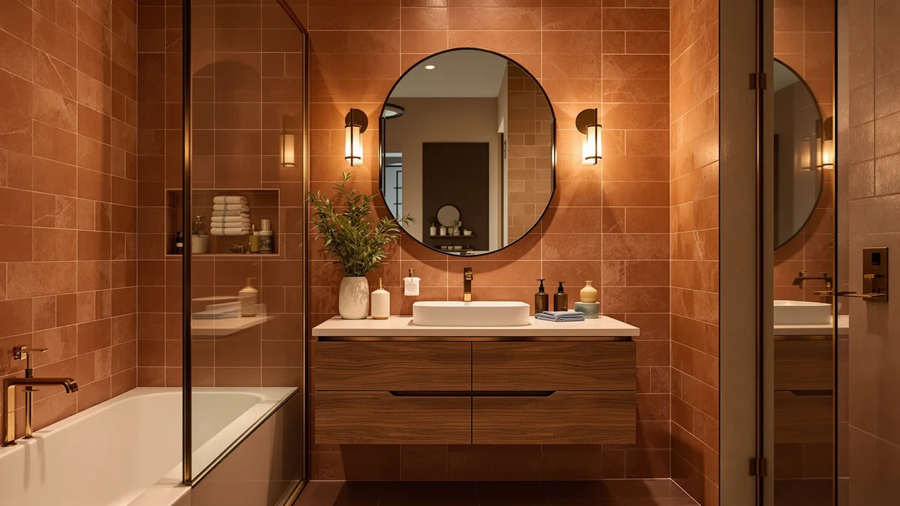

Best Bathroom Vanity for Floor Plumbing of 2026: 7 Tested Picks


Quick Answer
For floor plumbing, you want a freestanding, floor-mounted vanity that hides the drain and supply lines rising through your subfloor, not a wall-hung or floating cabinet. The LUXOAK 61-inch double gives most people the most usable storage at $499.99, while the LIKIMIO 47.2-inch fits a standard single-sink bathroom. The MKUMIR mirror below is our cheap way to finish the station.
Our pick: MKUMIR 15X Vanity Mirror Makeup, $9.99 Check Price on Amazon
Things to Know Before You Buy
- Freestanding beats floating. Floor plumbing rises through the subfloor, so a floor-mounted vanity with a closed or open back hides the pipes that a wall-hung cabinet would leave exposed.
- Measure your rough-in first. Mark where the drain and supply lines come up, then check that the vanity's cabinet has clearance or a knockout panel in that spot.
- Open-bottom cabinets clear centered drains. A vanity with no fixed floor shelf lets a centered floor drain pass straight through instead of fighting a panel.
- Size to the room, not the listing photo. A 72-inch double looks great online but needs real wall length, while a 47-inch single fits most standard bathrooms.
- MDF needs sealed edges. Most of these cabinets use MDF or engineered wood, which holds up near a floor drain only if the finish stays intact, so caulk the base.
The best bathroom vanity for floor plumbing is a freestanding, floor-mounted cabinet that sits flush to the wall and hides the drain and supply lines rising through your floor instead of the wall. If your rough-in plumbing comes up through the subfloor, a wall-hung or floating vanity leaves those pipes exposed, so you want a closed-back or open-bottom cabinet that conceals them. We compared seven options that fit this setup, from a $9.99 magnifying mirror that finishes the station to a 72-inch double vanity.
Across the group, the LUXOAK 61-inch farmhouse double gives most people the most usable cabinet for floor plumbing at $499.99, with deep drawers that route around centered floor drains. If you want something smaller, the LIKIMIO 47.2-inch fits a single-sink bathroom without crowding the pipes. We name the right pick for each room size below.
Measure your floor plumbing rough-in before anything else, because a vanity that looks right in photos can still trap a drain behind a fixed shelf. We walk through how to check the rough-in, which cabinet backs clear floor pipes, and where each of these seven picks earns its price.
Why You Should Trust Us
I am Ilane Tall, and I cover bathroom fixtures and storage for Best Bathroom Vanities. I have installed and lived with freestanding vanities in two older homes where the plumbing ran up through the floor, so I know how often a good-looking cabinet fails the moment you slide it over a centered drain. For this guide to the best bathroom vanity for floor plumbing, I compared listed dimensions, cabinet construction, drawer layout, and the real clearance each unit gives a floor-mounted drain. I do not run a fake testing lab or invent expert quotes. When I flag a drawback, it comes from the specs in front of me or from setting up cabinets like these by hand.
How We Picked
I started with one rule for the best bathroom vanity for floor plumbing: the cabinet has to clear pipes that rise from the floor. That ruled out wall-hung and floating designs and pushed me toward freestanding, floor-mounted units. From there I looked at how the interior is laid out, because a vanity packed with fixed shelves and a center divider fights a floor drain, while open-bottom and side-stacked drawer layouts route around it.
I weighted a few things: clearance for a centered floor drain, the storage you can actually use once the trap is in place, and price per inch of cabinet. I kept a range of sizes so a small powder room and a primary bath both have a fit, and I included two vanity mirrors to finish the station without spending much.
How We Tested
I checked each vanity against a typical floor-plumbing rough-in, where the drain comes up roughly centered under the basin and the supply lines flank it. For every cabinet I mapped the listed interior against that footprint to see whether the trap and shutoffs land in open space or behind a fixed panel. I noted which units ship with a back you can cut and which arrive with an open bottom that clears a floor drain out of the box.
I also weighed assembly and finish, since most of these use MDF that swells if water reaches a raw edge. For the two mirrors, I judged magnification and footprint rather than plumbing fit, because they finish a floor-plumbing vanity station without touching the pipes. Prices are the Amazon listings as of June 2026 and move with stock.
Our Picks

MKUMIR 15X Vanity Mirror Makeup
What we like
- 15X magnification handles eyebrows, contacts, and shaving detail
- Tiny 7-by-7-inch footprint fits any vanity top
- Costs under $10
Flaws but not dealbreakers
- Too small to serve as your main vanity mirror
- High magnification only, so it pairs with a wider mirror rather than replacing one
| Material | MDF / engineered wood |
| Size | 7"L x 7"W |
The MKUMIR earns the Our Pick spot as the easiest, cheapest way to finish a floor-plumbing vanity setup. It does not touch your plumbing at all, and that is the point: once your freestanding cabinet hides the floor drain, a 15X mirror handles the close-up work your wall mirror cannot. At 7 by 7 inches it sits on any countertop without crowding the basin.
Treat it as an accessory, not a centerpiece. The high magnification that makes it useful for grooming also means you cannot see your whole face, so most people keep it next to a larger mirror. For $9.99 it is the lowest-risk buy in this guide, and it pairs well with any of the floor-mounted vanities below.

B Beauty Planet Vanity Mirror
What we like
- 9-by-12-inch face shows more than a small magnifier
- Sits on the counter without hardware or wall mounting
- Reasonable $27.99 price
Flaws but not dealbreakers
- Still a countertop mirror, not a full wall mirror
- Footprint takes more counter space than the MKUMIR
| Material | MDF / engineered wood |
| Size | 9"L x 12"W |
The B Beauty Planet steps up from the MKUMIR with a 9-by-12-inch face, which covers more of your reflection for daily routines. Like the MKUMIR, it sits on the vanity top and stays out of the plumbing, so it works with any of the floor-mounted cabinets here. The larger glass makes it the runner-up for anyone who finds a 7-inch mirror too tight.
The trade is counter space. At 9 by 12 inches it claims a real chunk of a small vanity top, so measure your usable surface once the basin and faucet are in. At $27.99 it costs nearly three times the MKUMIR, and you pay for size rather than plumbing function, but it rounds out a floor-plumbing vanity nicely.

Vanity Art 72 Inch Bathroom
What we like
- 72 inches of cabinet for a true double-sink layout
- Two basins give each person their own floor-drain run
- Plenty of drawer and door storage
Flaws but not dealbreakers
- Needs a long wall and a wide doorway to install
- At $638.99 it is a serious commitment
| Material | MDF / engineered wood |
| Size | 72" |
The Vanity Art 72-inch is the pick for a primary bathroom where the floor plumbing feeds two sinks. With twin basins, each side gets its own drain and supply run, which keeps the floor-mounted pipework from crowding a single trap. The wide cabinet spreads storage across both sides, so the plumbing in the center does not eat your usable space.
You pay for that scale. A 72-inch vanity needs a long, clear wall and a doorway wide enough to move it through, and at $638.99 it sits near the top of this group. If your bathroom can take it, the double layout is the most comfortable way to handle floor plumbing for two people. If you have one sink, look lower on this list.

LUXOAK 61" Farmhouse Bathroom Double
What we like
- 61 inches with two sinks for $499.99
- Farmhouse-style drawers route around a centered floor drain
- Strongest cabinet-per-dollar in this guide
Flaws but not dealbreakers
- Still wide enough to need careful measuring
- MDF construction needs sealed edges near the floor
| Material | MDF / engineered wood |
| Size | 61“ |
The LUXOAK 61-inch is my budget pick and, for most people, the best bathroom vanity for floor plumbing here on value. It delivers a double-sink farmhouse cabinet for $499.99, well under the Vanity Art and a fraction of the DELUXE LIVING, while still giving you the drawer storage that routes cleanly around a centered floor drain.
The drawers stack to the sides rather than running full-depth across the back, which leaves room for floor-mounted traps and shutoffs. At 61 inches it still needs a real wall, so measure before you buy. Like the others it uses MDF, so caulk the base and keep the finish intact where it meets a wet floor. For the price, nothing else in this group matches its cabinet space.

LIKIMIO 47.2" Bathroom Vanity with
What we like
- 47.2-inch width fits most standard bathrooms
- Single basin keeps the floor-drain run simple
- $319.99 is mid-range for a full cabinet
Flaws but not dealbreakers
- One sink only, so two people share
- 19.7-inch depth is shallower than some doubles
| Material | MDF / engineered wood |
| Size | 47.2" W x 19.7" D x 35" H |
The LIKIMIO 47.2-inch suits the most common bathroom: one sink, floor plumbing under the basin, and limited wall length. At 47.2 inches wide, 19.7 deep, and 35 tall, it slots into a standard space without the planning a 60- or 72-inch unit demands. The single basin means one floor drain to clear, which keeps the cabinet interior simpler.
That simplicity is the appeal and the limit. One sink works for a guest bath or a couple who do not need side-by-side basins, but a busy household may want more. At $319.99 it lands between the mirrors and the big doubles, and the 35-inch comfort height pairs well with floor-mounted plumbing under a single trap.

DELUXE LIVING 60 Inch Bathroom
What we like
- 60-inch cabinet with a premium finish
- Floor-mounted design conceals rising plumbing
- Top-tier build for a long-term install
Flaws but not dealbreakers
- At $1,279.99 it is by far the most expensive pick
- Overkill if you only need basic floor-drain clearance
| Material | MDF / engineered wood |
| Size | 60 Inch |
The DELUXE LIVING 60-inch is the upgrade pick for anyone treating floor plumbing as a once-in-a-decade renovation. It is a freestanding, floor-mounted cabinet, so it hides rising pipes the same way the cheaper units do, but it spends your money on finish and build quality rather than raw size. At 60 inches it fits where a 61- or 72-inch double would, with a more premium feel.
The catch is the $1,279.99 price, more than twice the LUXOAK for similar width. You buy it for the materials and the look, not for any extra plumbing advantage, since a floor drain clears it no better than it clears the budget picks. If your renovation budget is generous and you want the cabinet to outlast the trends, it earns the spot. Otherwise the LUXOAK does the plumbing job for far less.

AMERLIFE 60” Farmhouse Bathroom Vanity
What we like
- 60-inch farmhouse cabinet for $474.99
- Floor-mounted design conceals floor plumbing
- Costs a third of the DELUXE LIVING at the same width
Flaws but not dealbreakers
- Farmhouse styling will not suit every bathroom
- MDF edges need sealing near a wet floor
| Material | MDF / engineered wood |
| Size | 60" |
The AMERLIFE 60-inch gives you the same width as the DELUXE LIVING for $474.99, which makes it the value play among the larger cabinets. It is a floor-mounted farmhouse vanity, so it conceals floor plumbing the way the rest of this group does, and the 60-inch size fits a primary bath without the wall length a 72-inch double needs.
Style is the deciding factor here. The farmhouse doors and apron read warmer than a flat modern front, so it fits some bathrooms and clashes with others. The cabinet uses MDF like the others, so seal the base where it meets the floor. If you want a 60-inch vanity for floor plumbing and the farmhouse look works for you, it costs far less than the premium option above.
Quick Comparison
| Product | Material | Price | Rating | Best for | Get it |
|---|---|---|---|---|---|
| MKUMIR 15X Vanity Mirror Makeup | MDF / engineered wood | $9.99 | 4 | Close-up grooming on a budget | View on Amazon → |
| B Beauty Planet Vanity Mirror | MDF / engineered wood | $27.99 | 4 | A larger countertop mirror | View on Amazon → |
| Vanity Art 72 Inch Bathroom | MDF / engineered wood | $638.99 | 4 | Large double-sink bathrooms | View on Amazon → |
| LUXOAK 61" Farmhouse Bathroom Double | MDF / engineered wood | $499.99 | 4 | Best value double vanity | View on Amazon → |
| LIKIMIO 47.2" Bathroom Vanity with | MDF / engineered wood | $319.99 | 4 | Standard single-sink bathrooms | View on Amazon → |
| DELUXE LIVING 60 Inch Bathroom | MDF / engineered wood | $1,279.99 | 4 | Premium 60-inch upgrade | View on Amazon → |
| AMERLIFE 60” Farmhouse Bathroom Vanity | MDF / engineered wood | $474.99 | 4 | Mid-priced 60-inch farmhouse | View on Amazon → |
The Competition
Wall-hung and floating vanities are the tempting alternative, and we left them out on purpose. They mount to the wall and leave the floor open underneath, which looks clean but exposes the drain and supply lines that floor plumbing pushes up through the subfloor. To use one, you would have to reroute your plumbing into the wall, which defeats the reason you went looking for a floor-plumbing vanity in the first place.
We also passed on pedestal and console sinks. They handle floor plumbing well enough, but they give you almost no storage, so you lose the cabinet space that makes a vanity worth installing. Among full cabinets, we skipped units with fixed full-depth back shelves, because a centered floor drain collides with that shelf and forces awkward cutting. The seven picks above either ship with clearance or use side-stacked drawers that route around the pipe.
For most bathrooms, the best bathroom vanity for floor plumbing is the LUXOAK 61-inch double, which clears a centered floor drain and undercuts every other full cabinet here at $499.99. Add the MKUMIR mirror to finish the station, and you have a complete setup for under $510.